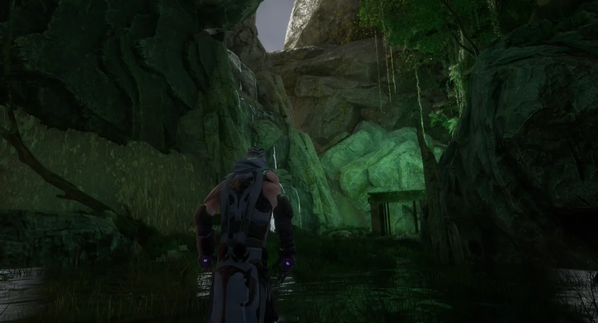
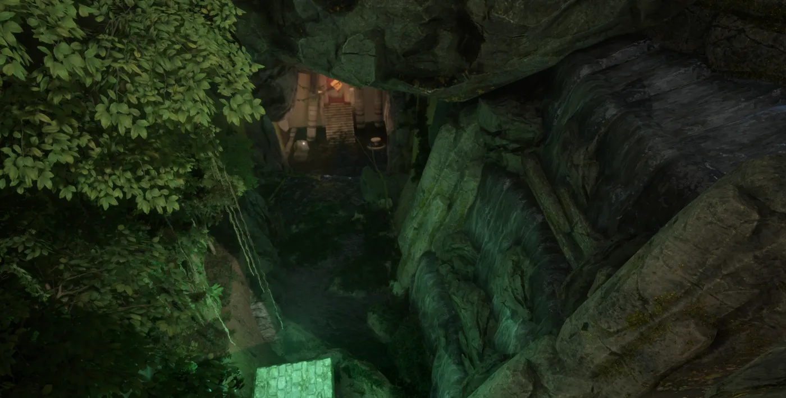
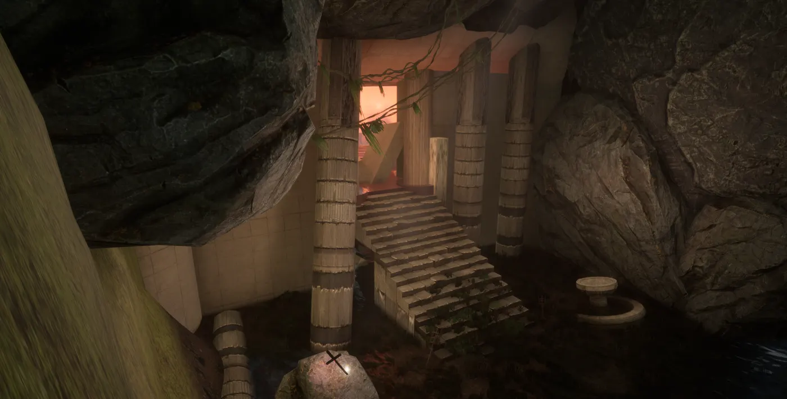
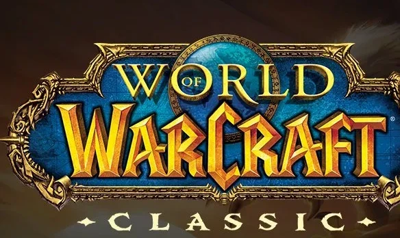

Quest, item, and spell design
Systems and content design work, from personal Unreal Engine projects to production quest and item design at Blizzard.
Sparklight
A personal action-roguelite built in Unreal Engine (4.12–5.2) with Blueprints, supporting both character and tower progression. Four archetype-based class kits — Knight, Ranger, Mage, Rogue — each with unique resource economies and ability synergies, plus a tower system built on shared inheritance for attack logic, targeting, and upgrades.



Sunken Temple
A solo adventure project in the tomb-raider tradition — navigation-driven exploration and environmental puzzles through waterfall caves and a fire-lit ruined temple.
Tidelight
A cozy platforming puzzle game — floating geometric platforms drift over a sunset beach, with neon accents marking the path forward.
Neon Ascent
A puzzle-platformer set against a neon-lit night sky — precise platforming and mechanics built around getting from point A to point B in style, with hazards to dodge along the way.
Spellbound
An open-world mage RPG built as a personal systems-design exercise — talent trees, merchant/shop economies, combat, stamina, and health systems all built from scratch to learn how those pieces fit together.
Blizzard design work

Design Mentee and Senior QA Analyst on Diablo IV and World of Warcraft — quest, item, and spell design in WoWEdit, working closely with systems and content teams on live production content.